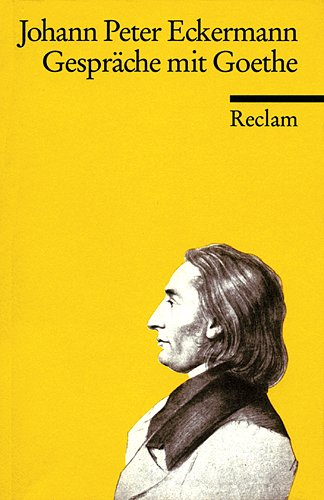
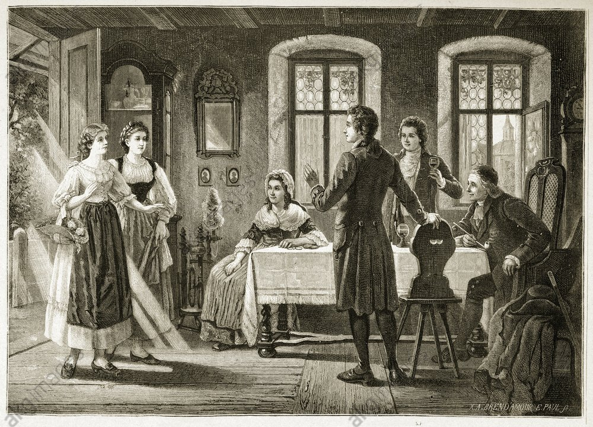
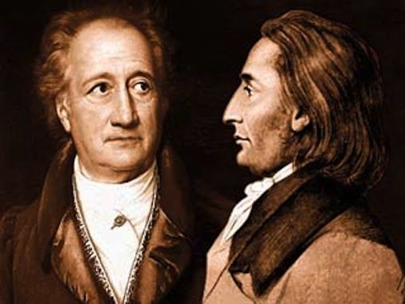
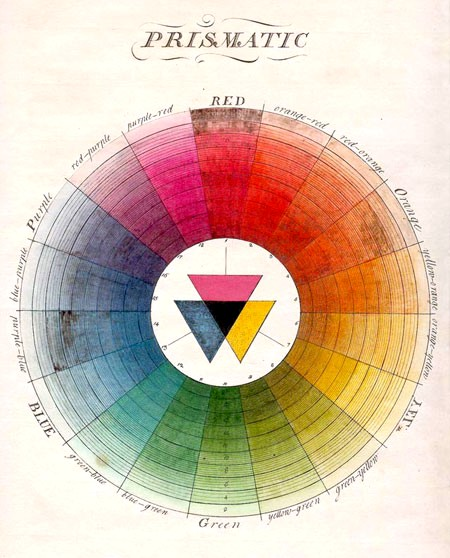
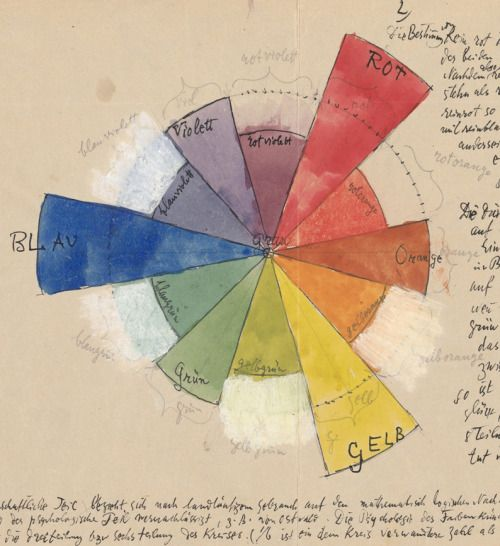
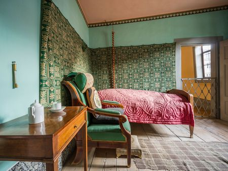

Johann Peter Eckermann, a young poet, had become Johann Wolfgang von Goethe's assistant and mentee during the last years of Goethe's life. He wrote down their conversations, which were published after Goethe died as Conversations with Goethe (Gespräche mit Goethe).
Some of my notes are in Conversations with Goethe.
The way Eckermann describes meeting and living with Goethe deserve its own place. I made this that place.

Discovering Goethe's Work
[...] It was at this time that I first heard the name Goethe and first obtained a volume of his poems. I read his songs, and read them over and over again, enjoying a happiness that no words can describe. It was as if I was only beginning to wake up and reach the actual consciousness; it seemed to me as if my own inner being, hitherto unknown to me, was reflected back to me in these songs.
Nor did I find anywhere anything strange or learned, for which my mere human thinking and feeling would not have been sufficient, nowhere in the names of foreign and obsolete deities, which I couldn't relate to; much more I found the human heart in all its desire, happiness and suffering, I found a German nature like the present bright day, a pure reality in the light of mild transfiguration.
Eckermann then sends a cold mail to Goethe
I could only ever agree, because I felt the truth of every word in my whole being. And so I decided briefly and sent the manuscript to Goethe and asked him for some words of recommendation to Mr. von Cotta.
Meeting Goethe
After sending his manuscripts, Eckermann gets invited to Goethe's House.
The interior of the house made a very pleasant impression on me; without being glossy, everything was highly noble and simple; also, various casts of antique statues standing on the stairs pointed to Goethe's special inclination towards the fine arts and Greek antiquity. I saw various women, which were busily going to and fro downstairs in the house

Through the open door opposite, one then looked into a farther room, also decorated with paintings, through which the servant had gone to announce my visit. It did not take long and Goethe came, in a blue upper skirt and shoes; a sublime figure!
[...] "I have just come from you," he said; "I have been reading your writing all morning; it does not need any recommendation, it recommends itself. He then praised the clarity of the presentation and the flow of thoughts, and that everything rested on a good foundation and was well thought out. "I want to transport it quickly," he added; "today I am still writing to Cotta with the riding mail, and tomorrow I will send the package by riding mail. I thanked him with words and looks.
Starstruck grown men are hilarious
I squeezed his knees, I forgot to talk at the sight of him, I could not get enough of him. The face so strong and brown and full of wrinkles, and every wrinkle full of expression. And in all this, such uprightness and firmness, and such peace and greatness! He spoke slowly and comfortably, as one might think of an aged monarch.
Goethe Invites Eckermann to Stay in Weimar
"I must say outright," he began, "I wish you to stay with me in Weimar this winter. These were his first words, then he went closer: "I will see to it that you have a home near me," Goethe continued, "you shall not have an insignificant moment all winter long. There is still much good in Weimar, and little by little you will find in the lofty circles a company equal to the best of all great cities.
I am also personally associated with very excellent men whose acquaintance you will gradually make and whose company will be highly instructive and useful to you. Goethe gave me various prestigious names and described in a few words the special merits of each one. "Where," he continued, "can you find so much good in such a small place?

The Intangible Value of a Mentor
After a few days in Weimar...
I now feel, through Goethe's words, a few years wiser and more advanced and know in my deepest soul the happiness to recognize what it means to meet a real master. The advantage is not to be calculated at all. What will I not learn from him this winter, and what will I not gain by merely dealing with him, even in hours, when he is not speaking something significant!
His person, his mere nearness, seems to me to be formative, even if he did not say a word.
[...] My former life conditions were of such a nature that it is as if I had only begun to live since the short time I am near you [Goethe]. Now everything is new to me. Every evening at the theater, every conversation with you makes epoch in my inner being. What passes as indifferent by differently cultivated and differently accustomed people is highly effective for me;
Goethe Teaches His Theory of Color and Light

It might have been about four o'clock in the morning; it was an overcast sky and the first signs of dusk. Goethe lit a light and went with it near the window to a table. He put the light on a white sheet of paper and placed a stick on it, so that the light of the candlelight from the stick cast a shadow after the light of the day.
The beginning of dusk finally came, and I told Goethe that it was now time. He lit the wax candle and gave me a sheet of white paper and a stick. "Now experiment and lecture!"
[... after a while ...] "Well, help me," I said, "and solve the riddle, for I am now impatient to the highest degree. You shall know," said Goethe, "but not today and not in this way. Next, I will show you another phenomenon through which the law is to become apparent to you. You are close to it, and further in this direction there is no way to go. But if you have understood the new law, you have been introduced to a completely different region and beyond very much.
If you come to the table an hour earlier at noon in a clear sky, I will show you a clear phenomenon, by which you are to comprehend at once the same law which is at the basis of it. It is very dear to me," he continued, "that you have this interest for the color; it will become a source of indescribable joys for you.
Next morning...
"Well," said Goethe, "what do you say to this shadow? "The shadow is blue," I answered, "So you have the blue again," said Goethe; "but on this other side of the stick after the candle, what do you see there?" also a shadow."But of what color?" "The shadow is a reddish yellow," I replied; "but how does this double phenomenon come about? "That is your business," said Goethe; "see that you bring it out. It is to be found, but it is difficult. Do not look into my 'theory of colors' until you have given up hope of bringing it out yourself.
After Eckermann figures it out...
[...] "It is very dear to me," he said, "that this phenomenon has come to your attention without knowing it from my 'theory of colors'; for now you have understood it and can say that you possess it. In this way you have also taken a standpoint from which you will proceed to the other phenomena. I will now show you a new one immediately.
I had my joy with the phenomenon. "Yes," said Goethe, "that is what is great about nature, that it is so simple and that it always repeats its greatest phenomena in small things. The same law that makes the sky blue can also be seen in the lower part of a burning candle, in the burning spirit and in the illuminated smoke rising from a village behind which lies a dark mountain range.
"But how do Newton's students explain this most simple phenomenon?" I asked. "You don't need to know that," Goethe replied. "It's too stupid, and you wouldn't believe what harm it does to a good head to deal with something stupid. Don't worry about the Newtonians at all, let the pure teaching be enough for you, and you will do well".

Mathematicians did not invent the metamorphosis of the plant! I have done this without mathematics, and the mathematicians have had to accept it. To understand the phenomena of the theory of colors, you need nothing more than a pure look and a healthy head; but both are, of course, rarer than you might think.
"With my scientific notebooks," said Goethe some time ago, "I am also moving slowly. Not because I believe that I can still contribute to significantly to the advancement of science, but because of the many pleasant connections that I maintain. The occupation with nature is the most innocent. From an aesthetic point of view, no connection or correspondence is to be thought of at all. They want to know which city on the Rhine is meant by my 'Hermann and Dorothea'! As if it would not be better to think of any city at all! One wants truth, one wants reality and thereby spoils poetry.
The Day Goethe Died

Eckermann in Goethe's House on his deathbed:
I had the desire for a lock of his hair, but awe prevented me from cutting it off. The body lay naked, wrapped in a white sheet, large pieces of ice had been moved around to keep it fresh as long as possible. Frederick pulled the sheet apart, and I was amazed at the divine splendor of these limbs. The chest was exceedingly powerful, broad and arched; arms and thighs full and gently muscular, the feet graceful and of the purest form, and nowhere on the whole body was there a trace of fatness or emaciation and decay.
A perfect human being lay before me in great beauty, and the delight I felt in it made me forget in a moment that the immortal spirit leaves such a shell. I laid my hand on his heart - there was a deep silence everywhere - and I turned downwards to let my restrained tears run free.
Appendix: Original Notes in German
Eckermann discovering Goethe's Work
[...] In dieser Zeit hörte ich zuerst den Namen Goethe und erlangte zuerst einen Band seiner Gedichte. Ich las seine Lieder, und las sie immer von neuem, und genoß dabei ein Glück, das keine Worte schildern. Es war mir, als fange ich erst an aufzuwachen und zum eigentlichen Bewußtsein zu gelangen; es kam mir vor, als werde mir in diesen Liedern mein eigenes mir bisher unbekanntes Innere zurückgespiegelt. Auch stieß ich nirgends auf etwas Fremdartiges und Gelehrtes, wozu mein bloß menschliches Denken und Empfinden nicht ausgereicht hätte, nirgends auf Namen ausländischer und veralteter Gottheiten, wobei ich mir nichts zu denken wußte; ^^vielmehr fand ich das menschliche Herz in allen seinem Verlangen, Glück und Leiden, ich fand eine deutsche Natur wie der gegenwärtige helle Tag, eine reine Wirklichkeit in dem Lichte milder Verklärung.^^
Ich konnte immer nur zustimmen, denn ich fühlte die Wahrheit eines jeden Wortes in meinem ganzen Wesen. Und so entschloß ich mich kurz und schickte das Manuskript an Goethe und bat ihn um einige empfehlende Worte an Herrn von Cotta.
Eckermann Meeting Goethe after Cold Mail Him
After sending his manuscripts, Eckermann gets invited to Goethe's House
[...] Das Innere des Hauses machte auf mich einen sehr angenehmen Eindruck; ohne glänzend zu sein, war alles höchst edel und einfach; auch deuteten verschiedene an der Treppe stehende Abgüsse antiker Statuen auf Goethes besondere Neigung zur bildenden Kunst und dem griechischen Altertum. Ich sah verschiedene Frauenzimmer, die unten im Hause geschäftig hin und wider gingen
Durch die offene Tür gegenüber blickte man sodann in ein ferneres Zimmer, gleichfalls mit Gemälden verziert, durch welches der Bediente gegangen war mich zu melden. Es währte nicht lange.. so kam Goethe, in einem blauen Oberrock und in Schuhen; eine erhabene Gestalt!
»Ich komme eben von Ihnen her,« sagte er; »ich habe den ganzen Morgen in Ihrer Schrift gelesen; sie bedarf keiner Empfehlung, sie empfiehlt sich selber.« Er lobte darauf die Klarheit der Darstellung und den Fluß der Gedanken, und daß alles auf gutem Fundament ruhe und wohl durchdacht sei. »Ich will es schnell befördern,« fügte er hinzu; »heute noch schreibe ich an Cotta mit der reitenden Post, und morgen schicke ich das Paket mit der fahrenden nach.« Ich dankte ihm dafür mit Worten und Blicken.
Ich drückte seine Kniee, ich vergaß das Reden über seinem Anblick, ich konnte mich an ihm nicht satt sehen. Das Gesicht so kräftig und braun und voller Falten, und jede Falte voller Ausdruck. Und in allem solche Biederkeit und Festigkeit, und solche Ruhe und Größe! Er sprach langsam und bequem, so wie man sich wohl einen bejahrten Monarchen denkt.
Goethe Invites Eckermann to Stay over the Winter
»Ich muß geradeheraus sagen,« begann er, »ich wünsche, daß Sie diesen Winter bei mir in Weimar bleiben.« Dies waren seine ersten Worte, dann ging er näher ein und fuhr
»Für eine Wohnung in meiner Nähe«, fuhr Goethe fort, »werde ich sorgen; Sie sollen den ganzen Winter keinen unbedeutenden Moment haben. Es ist in Weimar noch viel Gutes beisammen, und Sie werden nach und nach in den höhren Kreisen eine Gesellschaft finden, die den besten aller großen Städte gleichkommt.
Auch sind mit mir persönlich ganz vorzügliche Männer verbunden, deren Bekanntschaft Sie nach und nach machen werden und deren Umgang Ihnen im hohen Grade lehrreich und nützlich sein wird.« Goethe nannte mir verschiedene angesehene Namen und bezeichnete mit wenigen Worten die besonderen Verdienste jedes einzelnen. »Wo finden Sie«, fuhr er fort, »auf einem so engen Fleck noch so viel Gutes!
The Value of a Mentor
A few conversations later...
Ich fühle mich nun durch Goethes Worte um ein paar Jahre klüger und fortgerückt und weiß in meiner tiefsten Seele das Glück zu erkennen, was es sagen will, wenn man einmal mit einem rechten Meister zusammentrifft. Der Vorteil ist gar nicht zu berechnen. Was werde ich nun diesen Winter nicht noch bei ihm lernen, und was werde ich nicht durch den bloßen Umgang mit ihm gewinnen, auch in Stunden, wenn er eben nicht grade etwas Bedeutendes spricht! – Seine Person, seine bloße Nähe scheint mir bildend zu sein, selbst wenn er kein Wort sagte.
Meine früheren Lebenszustände waren der Art, daß es mir ist, als hätte ich erst seit der kurzen Zeit zu leben angefangen, die ich in Ihrer Nähe bin. Nun ist mir alles neu. Jeder Theaterabend, jede Unterredung mit Ihnen macht in meinem Innern Epoche. Was an anders kultivierten und anders gewöhnten Personen gleichgültig vorübergeht, ist bei mir im höchsten Grade wirksam;
Goethe teaches Eckerman about Color and Light
Es mochte etwa vier Uhr sein; es war ein bedeckter Himmel und im ersten Anfangen der Dämmerung. Goethe zündete ein Licht an und ging damit in die Nähe des Fensters zu einem Tische. Er setzte das Licht auf einen weißen Bogen Papier und stellte ein Stäbchen darauf, so daß der Schein des Kerzenlichtes vom Stäbchen aus einen Schatten warf nach dem Lichte des Tages zu. »Nun,« sagte Goethe, »was sagen Sie zu diesem Schatten?« – »Der Schatten ist blau«, antwortete ich. – »Da hätten Sie also das Blaue wieder,« sagte Goethe; »aber auf dieser andern Seite des Stäbchens nach der Kerze zu, was sehen Sie da – »Auch einen Schatten.« – »Aber von welcher Farbe?« »Der Schatten ist ein rötliches Gelb,« antwortete ich; »doch wie entsteht dieses doppelte Phänomen?« – »Das ist nun Ihre Sache,« sagte Goethe; »sehen Sie zu, daß Sie es herausbringen. Zu finden ist es, aber es ist schwer. Sehen Sie nicht früher in meiner ›Farbenlehre‹ nach, als bis Sie die Hoffnung aufgegeben haben, es selber herauszubringen.«
[...] »Es ist mir sehr lieb,« sagte er, »daß Ihnen dieses Phänomen aufgegangen ist, ohne es aus meiner ›Farbenlehre‹ zu kennen; denn nun haben Sie es begriffen und können sagen, daß Sie es besitzen. Auch haben Sie dadurch einen Standpunkt gefaßt, von welchem aus Sie zu den übrigen Phänomenen weitergehen werden. Ich will Ihnen jetzt sogleich ein neues zeigen.«
Der Anfang der Abenddämmerung trat endlich ein, und ich sagte Goethe, daß es jetzt Zeit sei. Er zündete die Wachskerze an und gab mir ein Blatt weißes Papier und ein Stäbchen. »Nun experimentieren und dozieren Sie!«
[... after a while ...] »Nun so helfen Sie mir«, sagte ich, »und lösen Sie mir das Rätsel, denn ich bin nun im höchsten Grade ungeduldig.« – »Sie sollen es erfahren,« sagte Goethe, »aber nicht heute und nicht auf diesem Wege. Ich will Ihnen nächstens ein anderes Phänomen zeigen, durch welches Ihnen das Gesetz augenscheinlich werden soll. Sie sind nahe heran, und weiter ist in dieser Richtung nicht zu gelangen. Haben Sie aber das neue Gesetz begriffen, so sind Sie in eine ganz andere Region eingeführt und über sehr vieles hinaus. Kommen Sie einmal am Mittage bei heiterem Himmel ein Stündchen früher zu Tisch, so will ich Ihnen ein deutlicher Phänomen zeigen, durch welches Sie dasselbe Gesetz, welches diesem zum Grunde liegt, sogleich begreifen sollen. Es ist mir sehr lieb,« fuhr er fort, »daß Sie für die Farbe dieses Interesse haben; es wird Ihnen eine Quelle von unbeschreiblichen Freuden werden.«
»Mit meinen naturwissenschaftlichen Heften«, sagte Goethe vor einiger Zeit, »gehe ich auch langsam fort. Nicht weil ich glaube, die Wissenschaft noch jetzt bedeutend fördern zu können, sondern der vielen angenehmen Verbindungen wegen, die ich dadurch unterhalte. Die Beschäftigung mit der Natur ist die unschuldigste. In ästhetischer Hinsicht ist jetzt an gar keine Verbindung und Korrespondenz zu denken. Da wollen sie wissen, welche Stadt am Rhein bei meinem ›Hermann und Dorothea‹ gemeint sei! – Als ob es nicht besser wäre, sich jede beliebige zu denken! – Man will Wahrheit, man will Wirklichkeit und verdirbt dadurch die Poesie.«
Ich hatte meine Freude an dem Phänomen. »Ja,« sagte Goethe, »das ist eben das Große bei der Natur, daß sie so einfach ist und daß sie ihre größten Erscheinungen immer im Kleinen wiederholt. Dasselbe Gesetz, wodurch der Himmel blau ist, sieht man ebenfalls an dem untern Teil einer brennenden Kerze, am brennenden Spiritus sowie an dem erleuchteten Rauch, der von einem Dorfe aufsteigt, hinter welchem ein dunkles Gebirge liegt.«
»Aber wie erklären die Schüler von Newton dieses höchst einfache Phänomen?« fragte ich. »Das müssen Sie gar nicht wissen«, antwortete Goethe. »Es ist gar zu dumm, und man glaubt nicht, welchen Schaden es einem guten Kopfe tut, wenn er sich mit etwas Dummen befaßt. Bekümmern Sie sich gar nicht um die Newtonianer, lassen Sie sich die reine Lehre genügen, und Sie werden sich gut dabei stehen.«
Haben doch auch die Mathematiker nicht die Metamorphose der Pflanze erfunden! Ich habe dieses ohne die Mathematik vollbracht, und die Mathematiker haben es müssen gelten lassen. Um die Phänomene der Farbenlehre zu begreifen, gehört weiter nichts als ein reines Anschauen und ein gesunder Kopf; allein beides ist freilich seltener, als man glauben sollte.«
The Day Goethe Died
Ich hatte das Verlangen nach einer Locke von seinen Haaren, doch die Ehrfurcht verhinderte mich, sie ihm abzuschneiden. Der Körper lag nackend in ein weißes Bettuch gehüllet, große Eisstücke hatte man in einiger Nähe umhergestellt, um ihn frisch zu erhalten so lange als möglich. Friedrich schlug das Tuch auseinander, und ich erstaunte über die göttliche Pracht dieser Glieder. Die Brust überaus mächtig, breit und gewölbt; Arme und Schenkel voll und sanft muskulös, die Füße zierlich und von der reinsten Form, und nirgends am ganzen Körper eine Spur von Fettigkeit oder Abmagerung und Verfall.
Ein vollkommener Mensch lag in großer Schönheit vor mir, und das Entzücken, das ich darüber empfand, ließ mich auf Augenblicke vergessen, daß der unsterbliche Geist eine solche Hülle verlassen. Ich legte meine Hand auf sein Herz – es war überall eine tiefe Stille – und ich wendete mich abwärts, um meinen verhaltenen Tränen freien Lauf zu lassen.